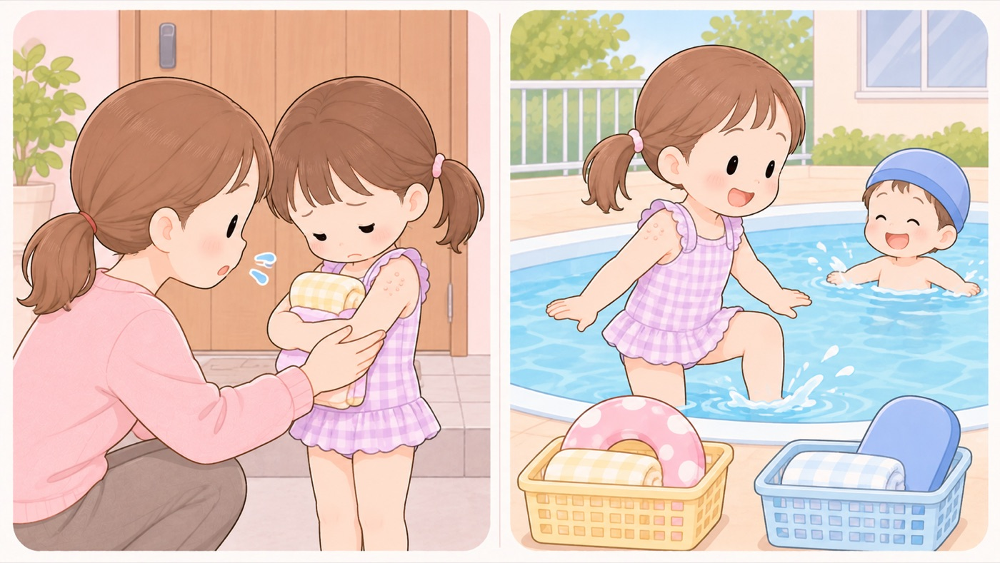

水いぼやりんご病で、園を休ませるべきか
4学会の統一見解では休む必要がない。水いぼはプールにも入れる。とびひだけ扱いが違う
学校感染症の第三種「その他の感染症」は、休ませる基準がはっきりしないため、医師のあいだでも判断が分かれてきました。
日本臨床皮膚科医会・日本小児皮膚科学会・日本皮膚科学会・日本小児感染症学会は、そろえるための統一見解を出しています。そこでは、多くのものについて休む必要がないと書かれています。

どんな病気か、休む必要があるか
| 水いぼ（伝染性軟属腫） | 幼児や小児によくできる、肌色の小さな丸いいぼです。放っておいても自然に治ることがありますが、治るまでに長い時間がかかります。この病気のために学校を休む必要はありません。プールにも入れます。タオル、水着、ビート板、浮き輪の共用は控えます。 |
|---|---|
| りんご病（伝染性紅斑） | 顔が赤くなり、腕や腿、体にも発疹が出ます。発疹が出たときには、すでにうつす力が弱まっています。発熱や関節痛がなく元気なら、休む必要はありません。 |
| 手足口病 | 手足に水ぶくれができ、口の中にも発疹が出ます。口内の発疹で食事がとりにくい、発熱、体がだるい、下痢、頭痛のいずれもなければ、休む必要はありません。便の中に原因のウイルスが長く出るので、トイレのあとは手を洗います。 |
| 頭しらみ（あたまじらみ） | 髪の毛に付くシラミです。触れ合って遊ぶ機会の多い幼児や小児には、よく起きます。休む必要はありませんが、できるだけ早く治療を受けます。周囲が一斉に治療を始めることが大切だとされています。 |
| とびひ（伝染性膿痂疹） | 水ぶくれやただれができ、そこから出る液に触れると、中の細菌で次々にうつります。病変が広範囲のときや全身の症状があるときは、休んで治療することがあります。外用の処置をしてきちんと覆ってあれば、休む必要はありません。 |
- すること：水いぼで、プールをやめさせない
統一見解は、水いぼについて「この疾患のために、学校を休む必要はありません」としています。プールなどの肌が触れ合う場では、タオルや水着、ビート板や浮き輪の共用を控える配慮が必要だと書かれています。
- すること：水いぼは、治療する理由のほうを知っておく
放っておいても自然に治ることがありますが、治るまでに長い時間がかかります。統一見解は、周囲の子どもに感染することを考えて治療する、としています。休ませるためではありません。
- すること：りんご病は、発疹が出たあとの元気さで判断する
顔が赤くなり、腕や腿、体に発疹が出た時点では、すでにうつす力が弱まっています。発熱や関節痛がなく本人が元気なら、休む必要はないとされています。
- すること：いったん消えた発疹がまた出ても、再発と考えない
りんご病の発疹は、日光に当たったり、興奮したり、入浴のあとなどに再び出ることがあります。統一見解は、これらは再発ではないので心配はいらないとしています。
- すること：手足口病は、口の中が痛くて食べられるかどうかで見る
口内の発疹で食事がとりにくい、発熱、体がだるい、下痢、頭痛という症状がなければ、休む必要はないとされています。水ぶくれが消えて口内炎が治ったあとも、便の中には原因のウイルスが長いあいだ出てくるので、トイレのあとの手洗いを続けます。
- しないこと：頭しらみを、不潔のしるしとして扱わない
統一見解は「頭虱は決して不潔だから感染したのではありません」「頭虱だからと差別扱いしてはいけません」と書いています。触れ合って遊ぶ機会の多い時期には、よく起きます。
- しないこと：とびひを、ほかと同じに考えない
水ぶくれやびらんからの浸出液を触ったり引っかいたりすると、中の細菌で次々にうつります。鼻の入り口に原因の細菌が多くいるので、鼻をいじらないようにします。
この項目の根拠
- 学校感染症 第三種 その他の感染症：皮膚の学校感染症に関する統一見解（平成22年7月・日本臨床皮膚科医会／日本小児皮膚科学会／日本皮膚科学会／日本小児感染症学会）（新しいタブで開きます）
学校感染症の第三種「その他の感染症」のうち皮膚の感染症について、日本臨床皮膚科医会・日本小児皮膚科学会・日本皮膚科学会・日本小児感染症学会が平成22年7月に統一見解を示していること。手足口病は、手足の水ぶくれが消えて口内炎が治っても便の中に原因のウイルスが長い間出てくるためトイレで用を済ませた後は手洗いをきちんとすること、口内の発疹で食事がとりにくい・発熱・体がだるい・下痢・頭痛などの症状がなければ学校を休む必要はないこと。伝染性紅斑（りんご病）は、顔が赤くなり腕や腿・体に発疹が出たときにはすでにうつる力が弱まっていることから、発熱・関節痛などの症状がなく本人が元気であれば学校を休む必要はないこと、いったん消えた発疹が日光に当たったり興奮したり入浴後などに再び出てくることがあるがこれらは再発ではないので心配いらないこと。頭虱（あたまじらみ）は、互いに触れ合って遊ぶ機会の多い幼児・小児には最近ではよく発生し、発生した場合はその周囲がみんな一斉に治療を始めることが大切であること、頭虱は決して不潔だから感染したのではなく頭虱だからと差別扱いしてはいけないこと、学校を休む必要はないができるだけ早く治療を受けること。伝染性軟属腫（みずいぼ）は、幼児・小児によく生じ放っておいても自然に治ることもあるがそれまでには長期間を要するため周囲の小児に感染することを考慮して治療すること、プールなどの肌の触れ合う場ではタオルや水着・ビート板や浮き輪の共用を控えるなどの配慮が必要であること、この疾患のために学校を休む必要はないこと。伝染性膿痂疹（とびひ）は、水ぶくれや糜爛からの浸出液を触ったり引っ掻いたりすると中の細菌で次々にうつること、特に鼻の入り口には原因の細菌が沢山いるので鼻をいじらないようにすること、病変が広範囲の場合や全身症状のある場合は学校を休んでの治療を必要とすることがあるが病変部を外用処置してきちんと覆ってあれば学校を休む必要はないこと。
関連キーワード水いぼみずいぼ伝染性軟属腫りんご病伝染性紅斑手足口病あたまじらみ頭しらみ頭虱とびひ伝染性膿痂疹登園休む出席停止プール保育園幼稚園学校感染症